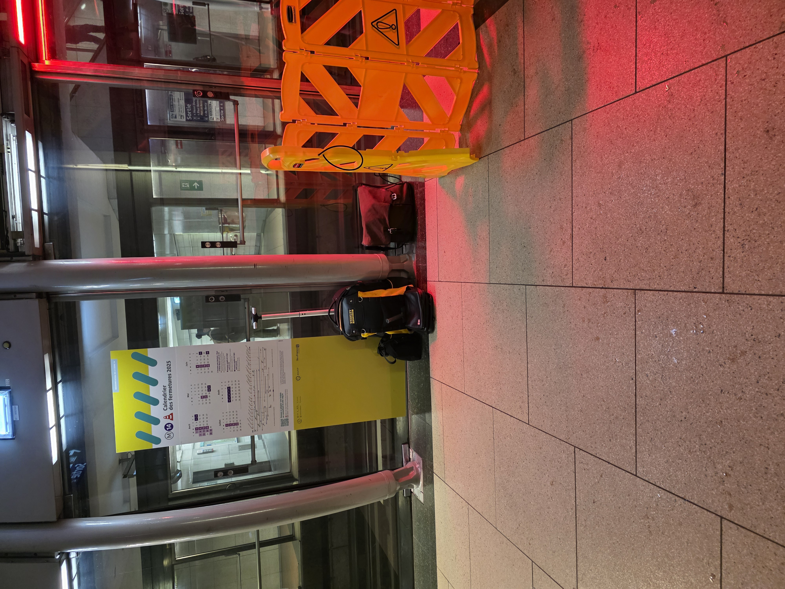
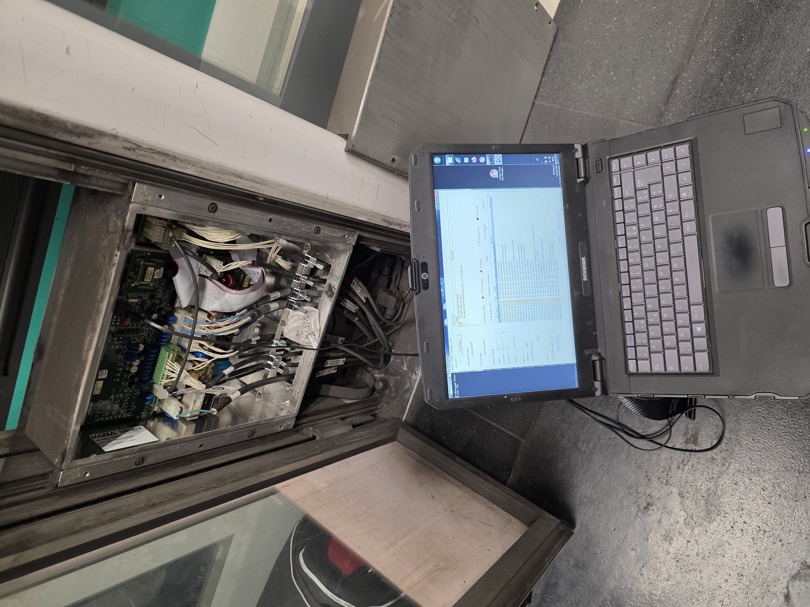

Au sein du service EChange Voyageur (ECV) de RATP Infrastructure, j'ai participé activement à la maintenance technique des façades de quai et des systèmes de portes palières sur plusieurs lignes du réseau. Ce stage m'a permis d'appréhender les contraintes opérationnelles de lignes à très haute fréquentation et l'importance cruciale de la disponibilité des équipements pour la fluidité du trafic et la sécurité des voyageurs.

Intervention sur la ligne 14 pour le déblocage d'une porte palière condamnée mécaniquement.Mes missions se sont partagées entre interventions sur le terrain et analyse technique des systèmes :

Intervention sur la ligne 13 sur le système COPP2 gérant la synchronisation entre le train et les façades de quai.Ce stage a renforcé ma compréhension des impératifs de rigueur et de sécurité dans le milieu ferroviaire. Chaque intervention exige le strict respect des procédures de consignation et de protection des agents. La maintenance ferroviaire n'admet aucune approximation, car la moindre défaillance peut avoir un impact direct sur la sécurité des circulations et l'intégrité des voyageurs.